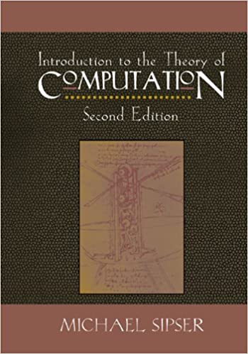

CS 373: Theory of Computation
Ursinus College, Fall 2023
"Spooky 3's", by Michael Tecce, CS 373 Fall 2021. A Halloween special DFA that recognizes the language of binary strings divisible by 3, starting and ending at the carved pumpkin
Some of the gadgets used in the proof that time trials in Mario Kart 64 maps are NP-Hard, as explained in this paper.
A Hamiltonian Cycle on the Stanford Bunny, courtesy of Q. Xing et. al. These are normally hard to compute (NP complete), but there are ways to make them efficiently on triangle meshes
One of the most important questions in all of CS: P=NP?, written in 7-bit ASCII binary on the left side of the Princeton CS building. An answer to this question will make the discoverer a millionare
The busy beaver function BB(N) is the maximum number of steps taken by any halting turing machine with N satates (excluding a halting state). It grows extremely quickly; it asymptotically upper bounds every computable function, including gigantic functions like Ackermann(N, N). Though it starts off fairly innocuously. This example shows a Turing machine that achieves BB(4) = 107.
Tom Boccuto (left) and Will Gillette, CS 373, Fall 2021, working on a monster DFA in Pfahler Hall
Course Evolving: Site Last Updated 10/10/2023
Table Of Contents
Overview
Class Times / Locations
- Monday/Wednesday/Friday, 1:30-2:20PM in Pfahler Hall Room 107
Student Office Hours
-
Monday/Wednesday 3:30PM - 5PM, Friday 3:30 - 4:30PM Pfahler 107
-
Tuesday evening 7PM - 9PM over zoom in 20 minute blocks, by appointment
Prerequisites/Requirements
- Monday/Wednesday 3:30PM - 5PM, Friday 3:30 - 4:30PM Pfahler 107
- Tuesday evening 7PM - 9PM over zoom in 20 minute blocks, by appointment
MATH-236W and grade of C– or higher in CS-174, or permission of instructor
Instructor

I grew up right around the corner in the Montgomery County and attended Upper Dublin High school (class of 2007). I then did my undergraduate degree in Electrical Engineering at Princeton University and my master's and Ph.D. degrees in Electrical And Computer Engineering at Duke University (heavily studying math and CS along the way). I finally started my dream job at Ursinus College in Fall of 2019! You can read more about my interests on my professional web site. Looking forward to getting to know everyone as we work through this course together!
Course Description
While the subject of programming languages asks the question "what is code," theory of computation asks an even deeper question: "what is a computer?" Or, in other words, "what can be computed"? Given the unbridled optimism about technology in the 21st century, one might assume that computers can do anything, but there are limits. To explore these limits, one might think about what programs can be written in Java on their particular Acer computer, for example. However, this type of analysis quickly gets nasty because of the huge variance in possible programming languages and possible computers (not to mention the huge variance in possible programs that can be written). What's to say that a student with a better computer than mine couldn't solve the problem that my computer struggles with, or that a computer with better specs and a more powerful programming language won't come along someday. What we need is an abstraction, or a mathematical model that's general enough to describe all possible computers and powerful enough to run all programs one could possibly write on these computers. Once we have such an abstraction, we can study it mathematically and prove what its capabilities and limits are. This is what the subject of the theory of computation is about.
This course will serve as an introduction to this deep topic at the undergraduate level. We will study increasingly powerful models of computation, starting with finite state automata, passing through context free grammars, and ending at Turing machines. The knowledge of Turing machines will allow us to quantify the hardness of certain computable problems in a very precise way, and we will be able to pose one of the most important open questions in computer science: is P = NP?. We will also learn that there are certain problems that we should never hope to solve under our models of computation, and we refer to such problems as undecidable.
This course satisfies the theory requirement for the computer science major (the other option being CS 374: Programming Languages). But beyond being interesting in its own right as a theoretical subject, this course overlaps with compiling techniques and with linguistics. So those interested in systems programming and natural languages processing / AI, respectively, will benefit from the knowledge in this course.
Learning Goals
- Discover how abstract thinking can make it easier to ask and answer difficult questions about computer science.
- Explore how simple, precise models of what a computer is can be used to answer seemingly complicated questions about what can be computed by any of the computers we have.
- Articulate the limits of computation, and what makes a problem "hard"
- Use theory in non-obvious ways to create awesome practical solutions to problems.
Learning Objectives
- Design "programs" for finite state automata, context free grammars, and Turing machines that are capable of solving various problems within the capabilities of these models of computation.
- Identify the capabilities and limitations of finite state automata, context free grammars, and Turing machines, and be able to demonstrate which are more powerful than the others.
- Work with algorithm reductions and big-O notation and use these tools to elucidate the hardness of different problems.
Technology Logistics
Below is a table summarizing what kinds of communications/activities occur via each technology, and below that there are more details on everything. This is admittedly complex, and it will take some getting used to, but it will be worth it once we get it nailed down.
NOTE: I will repeat the same announcements across e-mail and Discord, so you don't have to check all both for announcements.
| Class web site (You are here!) |
|
| Canvas |
|
| Discord |
|
| Microsoft Teams |
|
|
*: For privacy reasons, anything of a personal nature, and particularly things that have to with educational records (e.g. grades), need to be kept within Ursinus sanctioned platforms like Outlook e-mail and Microsoft Teams.
Canvas
We will be using Canvas, but only to submit assignments and to store all of the grades. I will also keep all of the due dates current on the calendar there, as students have appreciated this common space for all of their classes in the past.
Discord
To facilitate informal, class-wide discussions about the class, we will have a Discord channel for the class. My goal is for this to turn into a flourishing area to work through confusion and to share ideas as a group. All questions are welcome! We will also keep the CS 371 Discord channel open during class for polling and for general questions for students who are shy about speaking up verbally in front of their peers.
In addition to the regular channel, we will be holding drop-in student office hours on the Ursinus ACM Discord channel, since student office hours are joint between my classes. You can find it under the "Chit Chat" Category, as shown below

I will be on that channel even for the office hours that are held in person
Please do not send me direct messages or anything of a sensitive nature (e.g. grades) over Discord. Instead, use Microsoft Teams or e-mail for that, since those transactions are locked down better under Ursinus control.
Microsoft Teams
For one on one direct messages with me, and for buddy group coding with screen sharing, we will be using Microsoft Teams, which is linked to your Office suite through Ursinus, so you are automatically enrolled. This is an easy platform for students to initiate video sharing, so I highly recommend it for group work.
Readings
We will be following along pretty closely with the textbook below. The second edition is selected to save students money, though it is OK if you use the third edition (but you should be aware of any chapter discrepancies)
Introduction To The Theory of Computation, Michael Sipser, 2nd edition |
|  |
| ISBN-13: 978-0-534-95097-2 |
This book was selected because, in my opinion, it's a masterpiece in exposition for undergraduates; it is succinct, clear, and comprehensive for what I want to teach you (and beyond). I even know people in CS who have used this book as bedtime reading...
In addition to the Sipser book, I will link to sections from an online textbook from Virginia Tech, as shown below:
Formal Languages Spring 2021, Virginia Tech |
 |
I will abbreviate this is PIFLSA21 on the schedule. This is not required reading, but it can help to supplement what we're doing in class, and I will often draw homework problems from it. It should also be helpful for students when they need to miss class.
Finally, another resource that is helpful for students who miss class or who want to supplement their studying is Easy Theory by Ryan Dougherty. In my opinion, he is an incredibly clear expositor on this topic.
Deliverables
Problem Sets
The bulk of the grade in this class will be determined from roughly a dozen small to medium scale problem sets spread throughout the course. Students will have roughly a week to complete each one, and they will normally be due on Fridays. Problem sets will be a mix of exploring computational models by constructing examples, sometimes in a software suite known as JFlap. There will also be some mild proofs sprinkled in at the level that you would have seen in discrete math.
Class Engagement / Pre-Class Work
It's easier to learn a subject like theory of computation by drilling through a number of examples on each topic beyond the limited examples in the problem sets. Because of this, we will often do small exercises in class related to a topic that we're learning. To keep us on track, I may also periodically ask you to read over a description of an exercise or to read some notes about a new topic before class so we can go more deeply into the examples. I may also ask you to hand in something small related to the class exercises to make sure you were putting effort in during class. This will all make up a small part of your grade in the class.
Schedule
Outlined below is the schedule for the course, including lecture topics and assignment due dates. All assignments are due at 11:59PM on the date specified. The specific dates of different topics are subject to change based on the pace at which we go through the course.
| Lecture | Lectures (click for notes) | Readings/Links | Assignments/Deliverables | |
Unit 1: Regular Languages | ||||
| 1 | Mon 8/28/2023 | DFA Intro, JFLAP | Assignment 1: Discrete Math Practice Out | |
| 2 | Wed 8/30/2023 | Discrete Math Review | ||
| 3 | Fri 9/1/2023 | Binary Review, JFLAP for Designing DFAs | ||
| Sun 9/3/2023 | Assignment 1 Due | |||
| 4 | Mon 9/4/2023 | Formal Description of Finite Automata, Regular Languages | Assignment 2: DFAs Out | |
| 5 | Wed 9/6/2023 | Finish Regular Language Definitions, Python Code for DFAs |
| |
| 6 | Fri 9/8/2023 | The Union Operation |
| |
| 7 | Mon 9/11/2023 | Nondeterministic Finite Automata (NFAs) | Assignment 2 Due
Assignment 3: DFAs And NFAs Out | |
| 8 | Wed 9/13/2023 | NFA Practice, NFAs with and without λ, NFA Reversing | ||
| 9 | Fri 9/15/2023 | NFAs Recognize Regular Languages (NFA <----> DFA), NFAs in Python | ||
| 10 | Mon 9/18/2023 | Regular Operations, Regular Expressions, Converting Regular Expressions To NFAs | ||
| Tue 9/19/2023 | Assignment 3 Due | |||
| 11 | Wed 9/20/2023 | Global Regular Expression Search And Print (GREP): The efficiency of of NFA-based regular expression evaluation | Assignment 4: Regular Expressions and Nonregular Languages Out | |
| 12 | Fri 9/22/2023 | Converting DFAs To Regular Expressions with Generalized NFAs (GNFAs) | ||
| 13 | Mon 9/25/2023 | The pumping lemma | ||
| 14 | Wed 9/27/2023 | More pumping lemma practice | Assignment 4: Grep Due | |
Unit 2: Context Free Grammars (CFGs) | ||||
| 15 | Fri 9/29/2023 | Intro To Context Free Grammars (CFGs) |
| |
| 16 | Mon 10/2/2023 | CFG Practice, Ambiguity of CFGs |
| Final deadline for assignment 4
Assignment 5: Context Free Grammars Out |
| 17 | Wed 10/4/2023 | Pushdown Automata (PDAs) |
| |
| 18 | Fri 10/6/2023 | Pushdown Automata Practice |
| |
| 19 | Mon 10/9/2023 | CFG -> PDA Reduction, Begin PDA -> CFG Reduction |
| |
| 20 | Wed 10/11/2023 | Finish PDA->CFG Reduction, CYK Algorithm for Parsing Context-Free Grammars | ||
| 21 | Fri 10/13/2023 | Non Context-Free Languages, CFG Pumping Lemma | Assignment 5 Due | |
Unit 3: Turing Machines / Decidability | ||||
| -- | Mon 10/16/2023 | Fall Break | No CS 373 Class. Enjoy the break! | |
| 22 | Wed 10/18/2023 | Intro To Turing Machines | Assignment 6: Turing Machines Out | |
| 23 | Fri 10/20/2023 | Recognizability, Decidability |
| |
| 24 | Mon 10/23/2023 | Multi-Tape Turing Machines |
| |
| 25 | Wed 10/25/2023 | Intro To Reductions | Last day to drop courses with a "W" | |
| 26 | Fri 10/27/2023 | More Reductions, Begin Nondeterministic Turing Machines |
| |
| 27 | Mon 10/30/2023 | Finish Nondeterministic TMS, Turing Enumerators/Transducers |
| Assignment 6 Due |
| 28 | Wed 11/1/2023 | The Church-Turing Thesis | Assignment 7: Turing Machines Part 2 Out | |
| 29 | Fri 11/3/2023 | More Church-Turing Thesis Discussion, Decidable Languages |
| |
| 30 | Mon 11/6/2023 | Continue Decidable Languages, Universal Turing Machines And Von-Neumann Architecture | ||
| 31 | Wed 11/8/2023 | Universal Turing Machines, Begin Halting Problem |
| |
| 32 | Fri 11/10/2023 | Diagonalization, Turing Machines Are Countable | Assignment 7 Due
Assignment 8: Decidability Out | |
| 33 | Mon 11/13/2023 | Finish Halting Problem, Reductions for Undecidability | ||
Unit 4: Algorithms And Computational Complexity | ||||
| 34 | Wed 11/15/2023 | Reductions for Undecidability, Begin Formal Runtime Analysis: Big-O |
| Big-O Module Due Before Class |
| 35 | Fri 11/17/2023 | Continue Big-O, Little-o, Complexity Relationships Among Models |
| Little-o Module Due Before Class |
| 36 | Mon 11/20/2023 | The Class P | Assignment 8 Due | |
| Tue 11/21/2023 | Assignment 9: Undecidability / Complexity Out | |||
| -- | Wed 11/22/2023 | Thanksgiving | No CS 373 Class. Enjoy the break! | |
| -- | Fri 11/24/2023 | Thanksgiving | No CS 373 Class. Enjoy the break! | |
| 37 | Mon 11/27/2023 | The Class NP, P = NP? |
| Final Project Out |
| 38 | Wed 11/29/2023 | The Satisfiability Problem (SAT), NP Completeness |
| |
| 39 | Fri 12/1/2023 | Vertex Cover, Hamiltonian Paths |
| |
| 40 | Mon 12/4/2023 | Nondeterministic Turing Machine Definition of NP |
| Assignment 9 Due |
| 41 | Wed 12/6/2023 | The Cook-Levin Theorem | ||
| 42 | Fri 12/8/2023 | NP Hardness, Mario And Mario Kart Are Hard | ||
| 42 | Fri 12/17/2021 | Final Project Due | ||
Grading
Breakdown
| Problem Sets | 65% |
| Final Project | 20% |
| Final Exam | 10% |
| Class Engagement, Pre-Class Prep | 5% |
Deadlines Policy
I have been very flexible in the past, but I have observed that this is usually to the detriment of students who let certain assignments drag on well past the deadlines and fail to move onto subsequent assignments, ultimately failing the course or getting artificially low grades that do not reflect their abilities. Moving forward, I would like to prevent this, and I would like all students to learn how to triage and submit "good enough" work on individul assignments so they can keep moving, and to practice valuable accountability skills that will benefit them in future endeavors past Ursinus. At the same time, I recognize that many things happen outside of the classroom that are beyond your control; life is inherently difficult and unpredictable, particularly for those who come from different backgrounds and who have responsiblities beyond the classroom. Therefore, I am building an oxymoronic "rigid flexibility" structure into the course, without exceptions outside of official accommodations. The rules are as follows:
-
All assignments are due at 11:59PM EST on the date(s) stated on the schedule
-
You have 5 free late days to use on assignments throughout the semester. These will go down to the decimal point if you submit minutes or hours after a deadline, so students don't have to fret about submitting at, e.g., 12:05 AM. You will get extra credit for any days you do not use, but no work will be accepted once the lateness days are used up
-
I will drop the lowest assignment score at the end of the semester to help you adjust to this new policy.
To reiterate, you will find lots of flexiblity built into this policy, but it is designed to prevent you from getting too stuck on an individual assignment, and also to incentivize people to come prepared for lively class discussions. I hope we will all have more positive experiences moving forward with this.
Letter Grades
Letter grades will be assigned on the scale below at the end of the course.
|
|
|
|
|
Classroom Environment
Inclusive Environment
Computer science is a field that has historically been and continues to be steeped in inequalities. In fact, one of the founders of theory of computation, Alan Turing, was discriminated against by society for his sexuality to the extent that he likely died by suicide. Given that we're still talking about the contributions he made during his lifetime, we have to wonder what more he would have contributed to the field had he not been pushed out of society, and, by extension, what other contributions we may have missed out on from other people who have not traditionally been welcomed in our field.
Within class interactions, my goal is to foster a environment in which students across all axes of diversity feel welcome and valued, both by me and by their peers. Axes of diversity include, but are not limited to, age, background, beliefs, race, ethnicity, gender/gender identity/gender expression (please feel free to tell me in person or over e-mail which pronouns I should use), national origin, religious affiliation, and sexual orientation. Discrimination of any form will not be tolerated.
A slightly more subtle thing that we want to watch out for in class is not to assume anything about others based on implicit biases. I have heard from quieter students at Ursinus from different backgrounds in the past that they sometimes feel their contributions aren't valued from their group members and that they're talked over during collaborations. So please be mindful of this and be sure to curb this behavior in yourself if you notice it...this is something immediate you can to do help stem the leaky pipeline in our field.
.Furthermore, I want all students to feel comfortable expressing their opinions or confusion at any point in the course, as long as they do so respectfully. As I will stress over and over, being confused is an important part of the process of learning computer science. Learning computer science and struggling to grow is not always comfortable, but I want it to feel safe. In other words, I will regularly keep you at the boundary of your comfort zone with challenging assignments, but I want you to feel comfortable with me and your peers and respected as a learner during the process.
{kind=link}
Finally, I am aware that, particularly during the pandemic, there are a variety of factors that may make it difficult to perform at your best level in class. At Ursinus, we are fortunate to have quite a mix of students from different backgrounds, many of whom need to work part time, and an increasing number of whom are commuters and have family obligations. If you find yourself having difficulty performing at the level that you want and/or turning assignments in on time because of any of these issues, please communicate with me, and we can come up with a solution together (I will gently reach out if I notice any slips even if you don't communicate). This is an exciting special topics course, and I want to work to keep your excitement alive, regardless of your personal circumstances. We will get you through the course as long as the lines of communication are open and we work together. You belong in CS!
Evening Pfahler 106 Work Jams 🍇🍓🫐🫙🎵 🎵 🎵
To foster work and collaboration, I've booked Pfahler 106 from 7PM - 10PM during every week night, Monday - Friday, during the semester for people to go and work on assignments together. I've witnessed amazing collaborations happen in my office hours the past two years holding them in classrooms, and I want to encourage that kind of community to continue more outside of my own office hours. To that end, each student will be required to attend at least 3 evening sessions. I'll have snacks stored in that room, so your job will simply be to show up, take out the snacks, and stay for at least two hours and work. You can sign up for any evening throughout the semester, but you must sign up for at least one evening before midterms. I will be having the same requirement in my CS 271 class this fall, so there should be some great cross-pollination.
When you attend one of these, submit an entry on one of the assignments on canvas indicating the date you went. Also, if you're comfortable, take a selfie with other people there and post it on the Maker club discord!
Note on Commuter Students
If you are a commuter student, you are welcome to earn your 3 points by going to 3 in-person sessions. However, I understand this might be difficult logistically. So commuter students only have to attend one in person. For the other two points, commuter students have the option to provide answers to 2 questions on discord for each point, for 4 question answers total.
Classroom Attendance And Etiquette
Students are expected to attend class in person. We're shooting for engagement over mere attendance; students are expected to be active in class exercises and to be fully invested in the class (i.e. no internet browsing). Students who are unable to attend class for significant reasons (whether isolation or quarantine for students who have received a positive test, those experiencing Covid-related symptoms while awaiting test results, or other issues that make it difficult to attend class) should work pro-actively to make up any class exercises that they missed. To help with this, I will do my best to put up either detailed notes of my own to supplement the textbook, or Youtube videos from other instructors on topics that we cover.
Finally, students are expected to follow any college policy requiring mask wearing on campus, in addition to following any guidance faculty provide for their individual classes.Masks should be available in every academic building, if needed.
Maximizing Your Communal Experience
Here are ways students can maximize their experience as a class community, and which could lead to extra credit in certain situations.
- Helping to teach a student a topic during student office hours.
- Certain calls for participation in class
- Particularly helpful or insightful messages on Discord
- Finding mistakes in the book or on the assigned homework
Discord Communication Policy
Since this is a class-wide communication, the following rules apply to online communication- Students are expected to be respectful and mindful of the classroom environment and inclusivity standards. They are equally applicable to a virtual environment as they are in class.
- Students are not permitted to publicly share direct answers or questions which might completely give away answers to any homework problems. When in doubt, please send me a direct message.
- I will attempt to answer questions real time during my virtual student office hours. Otherwise, I will make every attempt to respond within 24 hours on weekdays. I cannot be expected to respond at all on Saturdays or Sundays or outside of 10AM-8PM on weekdays, so please plan accordingly. (Of course, students can and should still respond to each other outside of these intervals, when appropriate).
The points above are part of a more general term referred to as "netiquette." Please refer to the chart below, provided by Touro College

Collaboration Policy
Students may work with each other on the problem sets, but every student must submit their own writeup, and they must indicate upon submission who they worked with. Furthermore, students must not refer to any sources outside of the two textbooks in the course or other materials explicitly linked from the schedule without consulting me first. TL;DR Do not copy solutions from the internet (such shortcuts will actually totally ruin the fun of the random moments when the solution comes to you as you're walking across campus...give yourself time and space for those eureka moments to happen)
For the final project, students are expected to work completely individually on their code, though they can discuss concepts at a high level.Finally, use of ChatGPT or other large language models is not permitted in this class. Furthermore, since these models are optimized to sound convincing rather than to output correct information, it's quite likely will not output correct proofs, or that it won't be easy to follow the logic once we dig into it. So submitting a partially correct proof that you've done on your own will probably get you more points anyway. Also, I have a lot of responsibilities to juggle in my job. Please don't waste my time by sending me solutions that are generated by a computer.
If the collaboration policy has been violated in any way, regardless of intent, then it may be an academic dishonesty case, and it will be referred to the Associate Dean for Academic Affairs. I am required to make this report in every occurrence, so it is best to speak with me first if there are any questions about the policy or expectations. You should feel free to have these conversations with me anytime prior to making your submission without fear of penalty.
On a more personal note, though a willful violation of academic honesty may seem merely transactional to a student, faculty take violations very personally, as they are disrespectful to the time and effort we put into our courses. I would also like to emphasize that your reputation is much more important than your grades. The recommendations we as faculty write go a long way, and we are much happier to write positive recommendations for students with lower grades who show grit and growth than we are to write recommendations for students with higher grades who have cheated.
Other Resources / Policies
Accommodations
In addition to our general awareness diversity, Ursinus College is also committed to providing reasonable accommodations to students with disabilities. Students with a disability should contact the Directory of Disability Services ASAP. Dolly Singley is located in the Center for Academic Support in the lower level of Myrin Library. Please visit this link for more information on the process. I will do my best to accommodate your requests, and they will be kept completely confidential.
One on One Tutoring
One on one tutoring for up to two hours per week is available through the institute for student success. Please click here to fill out a Qualtrics survey if you'd like to take advantage of this.
Let's Talk
Mental health care is increasingly recognized as a crucial service for the undergraduate population. Please visit this link for more information about complementary counseling services provided by the college. The Wellness Center has a virtual drop-in crisis hour at 2-3 pm each weekday, which is available for students in crisis who need to be seen immediately by a clinician. If you are still hesitant to go, take me (Professor Tralie) as an example of someone who has benefited greatly from talk therapy and medication in the past. I am happy to discuss this in student office hours in more detail.
Title IX
Title IX is a federal law, under which it is prohibited to discriminate on the basis of gender. The Title IX Coordinator is available to receive inquiries and to investigate allegations in this regard.
Inclement Weather Policy (aka COVID Policy)
In the event that the College closes due to inclement weather or other circumstances (such as a COVID lockdown), our in-person class sessions, drop-in student office hours, or other meetings will not be held. I will contact you regarding our plan with regard to rescheduling the class or the material, any assignments that are outstanding, and how we can move forward with the material (for example, any readings or remote discussions that we can apply). If necessary, I may schedule online virtual sessions in lieu of class sessions, and will contact you with information about how to participate in those. I will communicate this plan to the department so that it can be posted on my office door if it is feasible to do so. This policy and procedure will also apply in the event that the College remains open but travel conditions are hazardous or not otherwise conducive to holding class as normal. Should another exigent circumstance arise (for example, illness), I will follow this policy and procedure as well.